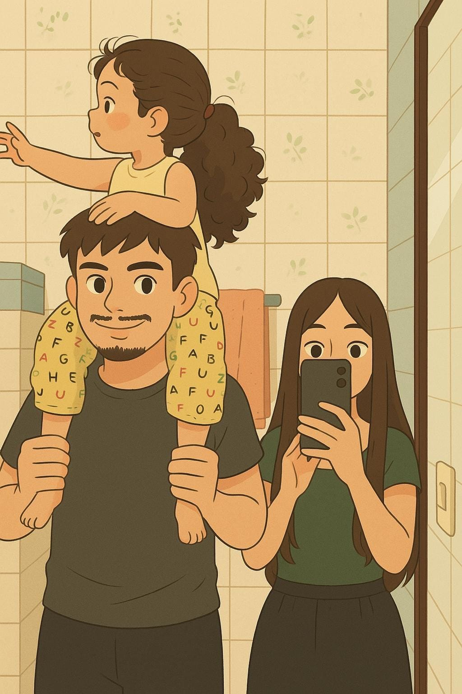
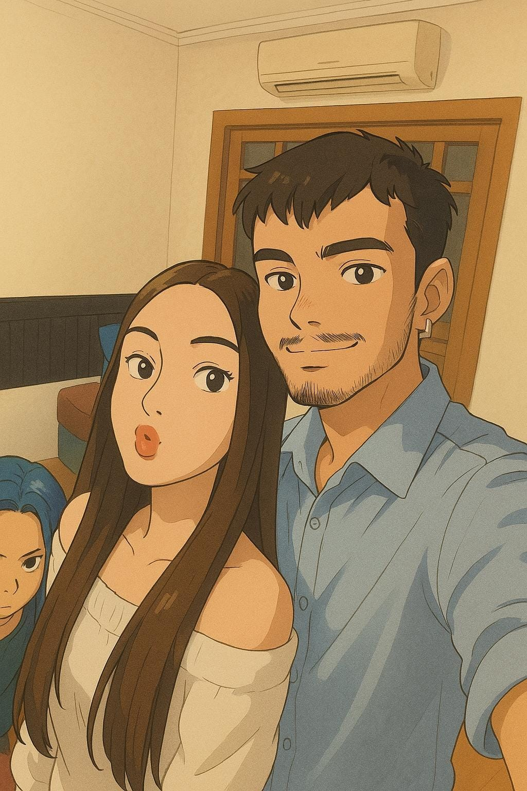
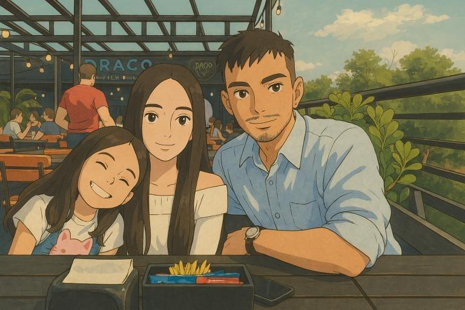
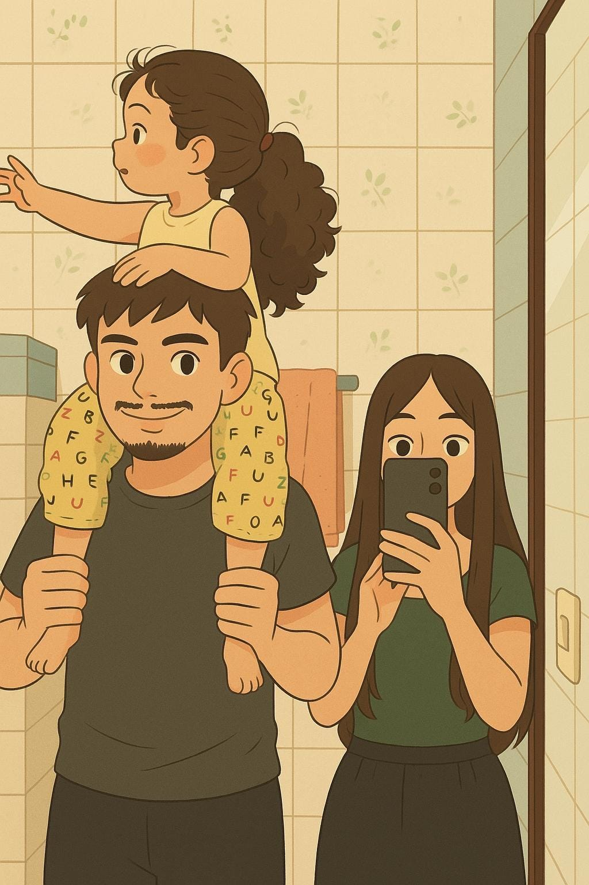
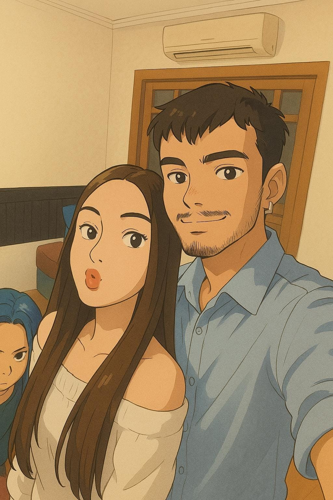
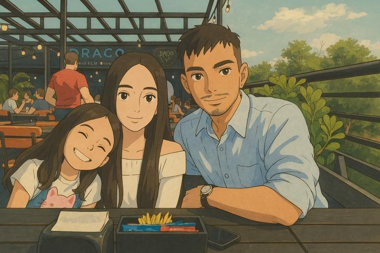

Matheus & Ana üíû
Juntos desde 15/12/2024
ㅤ
Este é o dia da pessoa que eu mais amo nesse mundo. Se você está lendo isso, eu estou extremamente feliz, pois isso significa que você continua ao meu lado... Eu te amo.
Seja bem-vindo
Esta é uma página de minha autoria feita em HTML.
Aqui você poderá interagir com o display, navegar entre as abas e acionar ferramentas especiais.
Como usar:
üéµ Botão Música: Clique para tocar ou pausar a música de fundo.
üåì Botão Tema: Alterne entre tema claro e escuro para seu conforto visual.
↘️ Ambos ficam no canto inferior direito da tela.
Matheus & Ana üíû
Linha do Tempo: Melhores momentos
Primeiro Encontro ❤️
Lembro como se fosse ontem, eu não sabia direito o que te falar.
Francamente, nunca imaginei que a partir dali teríamos algo especial.
Mas quando nossas mãos se encontraram e eu descobri quem você realmente era, entendi que havia encontrado o amor da minha vida. (Emocionado né? kk)
Orla do Gasometro üåÖ
O dia que fomos na Orla, lembro que foi o dia em que postamos nosso primeiro story juntos tambem (depois de eu ter dado uma insistida kkk)
Lembro de estarmos voltando pra casa, olhando rells no insta, e de la veio a ideia que marcaria o dia para mim: "tinha dois ursos, o beija eu e o me beija" kkkk
Depois disso tomei coragem e dei o nosso primeiro beijo naquele dia (me arrependi de não ter feito isso antes), foi ali que comecei a bolar o meu grande plano...

Tua formatura üéì
Lembro de tu ter mencionado que ia se formar em pouco tempo, e naquele mesmo dia engatilhou na minha mente "eu tenho que ir"
A situação com os ingressos foi meio conturbada, mas felizmente eu consegui ir, e nossa, como tu tava linda naquele vestido
Naquele dia conhecia o resto da tua familia, teus irmãos me deram um apavoro no começo, mas acabei gostando de todo mundo, e acho que gostaram de mim tambem, mas isso não era tudo que tinha guardado para aquele dia...
O dia do pedido üíç
Dia 15/12/24, lembro como se fosse ontem, o dia em que te pedi em namoro, passei semanas pensando em como fazer aquilo dar certo
Foram dias pensando: "Ajoelhou ou não? Pe√ßo ela em publico ou sozinha? Tenho que dar um jeito de registrar esse momento", e não ajudava muito tu ficar mandando "üíç" no whatsaap kkk
Passei o dia todo com a caixa da aliança no bolso (não sei como tu não percebeu), no momento em que vc foi ao banheiro, mostrei para todos na mesa, e pedi ajuda deles pra registrar o momento
Sempre lembro de quando tu me disse sim, nunca estive tão feliz

Indo juntos ao casamento üïäÔ∏è
Me lembro de antes mesmo da gente começar a namorar, eu te mandar uma mensagem "quer ir a um casamento comigo?", eu via isso em filmes e sempre quis dizer kkk
Uma semana depois de começarmos a namorar nos fomos ao casamento do meu irmão, que por coencidencia, foi no mesmo lugar em que te pedi em namoro
Foi muito bom te apresentar pro meus irmãos e cunhados, me emocionou muito ver eles se casando
PS: eu so queria que tu tivesse feito um pouco mais de vontade para pegar o buque ü•≤
Viajando juntos üèñÔ∏è
Uma semana antes de acabar o Ano, minha familia resolve ir para a praia, e é obvio que eu não iria te deixar
Felizmente tu ja conhecia um pouco o pessoal da familia, então não foi dificil se enturmar
Foi Muito bom poder te levar pra jantar com a minha familia, tomar banho de mar contigo, ficar agarrados na rede (com a Maia kkk), jogar GTA naquela tv minuscula e dormir espremidos naquele colchonete kkkk
Ano novo juntos üéÜ
Aquele dia foi legal, eu tava ansioso pensando em virar o ano namorando contigo
Nos saimos pra jantar em um restaurante a beira-mar, os que eu queria estavam fechados, então achamos um que eu nunca tinha ido antes, a comida tava boa apesar de ter demorado um pouco
Voltamos para casa para sair com todo mundo, mas vendo que eles iam se atrasar fomos sozinhos ver os fogos
Lembro de tu postar um stori e ficar preocupada que tua madrasta visse e contasse pro teu pai, ja que tu não tinha avisado que iria sair kkkk
Enfim, te conhecer foi a melhor coisa que aconteceu comigo naquele ano
Mufasa üò∫
Por coencidencia, em um dia em que faltei o curso pra ficar contigo, nos encontramos um gatinho filhote miando no forro
Lembro da ansiedade que tu ficou para pegar ele de la, e o trabalhão que deu pra conseguir fazer isso
No momento em que eu consegui, tu arrancou o bixo das minhas mãos tão rapido que até me assustei, mas era muito fofo o jeito que tu cuidava dele
Nós tinhamos visto fazia uma semana Mufasa o rei leão, e como o gato era laranja decidimos chamar ele assim
Infelizmente ele veio em um mal tempo e tivemos que doar ele, mas eu tenho certeza que ele esta bem hoje, e que vamos ter um ou mais no futuro (ta, eu deixo tu chamar ele de Francisco Cisco kkkk)
Nos casando üë©‚Äç‚ù§Ô∏è‚Äçüë®
Aqui foi o dia em que nos casamos... AH PERA... Isso não aconteceu ainda... AINDA!!!
Nossa familia üë™
E finalmente aqui somos nós, com nossos dois gemeos, a Isabel e o Rafa, os nossos gatos, o Francisco e o Cisco, e o nosso salsicha chamado Scooby (tu ja escolheu o nome dos gato e das crianças, deixa esse pra mim pelo amor de Deus)
AH PERA... Isso tambem não aconteceu por enquanto... MAS SÓ POR ENQUATO TA BOM!?

Extras üì∏

 




